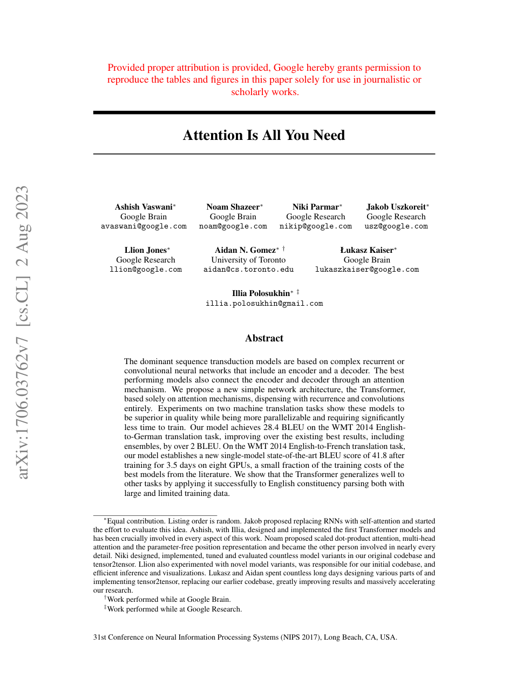

Representative Scenarios (Section 4):
Click to Run
Click any graph node to inspect coordinates, modality, and verifier score.
Diagnostic JSON Audit Trace
Trace Hash: sha256:d8b2e1...
Retrieval Latency
523 ms
BM25 + all-MiniLM-L6-v2 (k=60)
Generation Latency
26.59 s
Local Ollama (qwen3.5:9b)
Verifier Latency
15 ms
Lexical + Polarity + Numerical
Grounding Status
VERIFIED
87.6% Supported Category